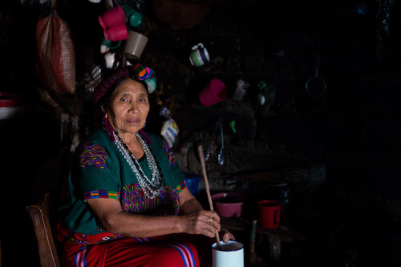
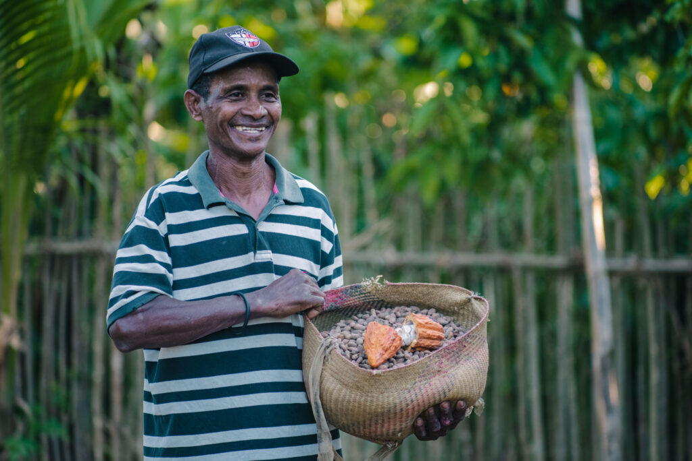
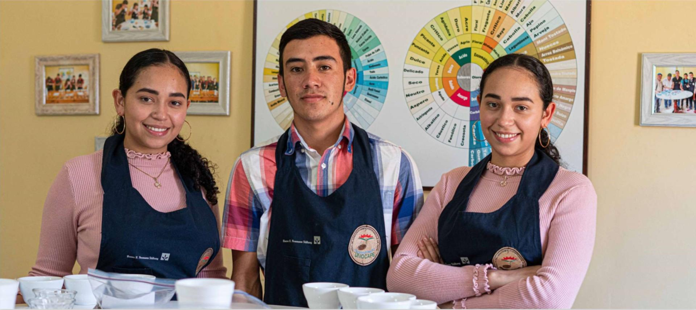
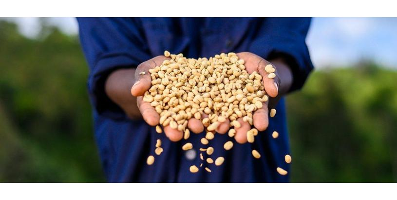

The Coffee Trust

This non-profit foundation's mission is to help the indigenous coffee farmers of Central America by helping them adopt better agricultural practices and be prepared against viruses and fungi that can attack and kill the coffee plants
Catholic Relief Services

The general aim of this organization is to assist the impoverishes and the vulnerable all over the world. One of the biggest projects they took on included improving supply chains in Central Aamerica to maintain the sustaninibility of coffee production and processing for coffee farmers
Coffee Kids

This organization's main goal is to pave a smoother road for the future of coffee farmers in Central America and Tanzania. They are achieving this through mentorship, training and by promoting entrepreneurship with financing for their business endeavors
Olam Coffee

Olam coffee has comitted over $4 million in financial aid to help fight against the Covid-19 pandemic. It aims to achieve this by securing and distributing essential medical equipment, distributing food to locals and advocating for rural communities